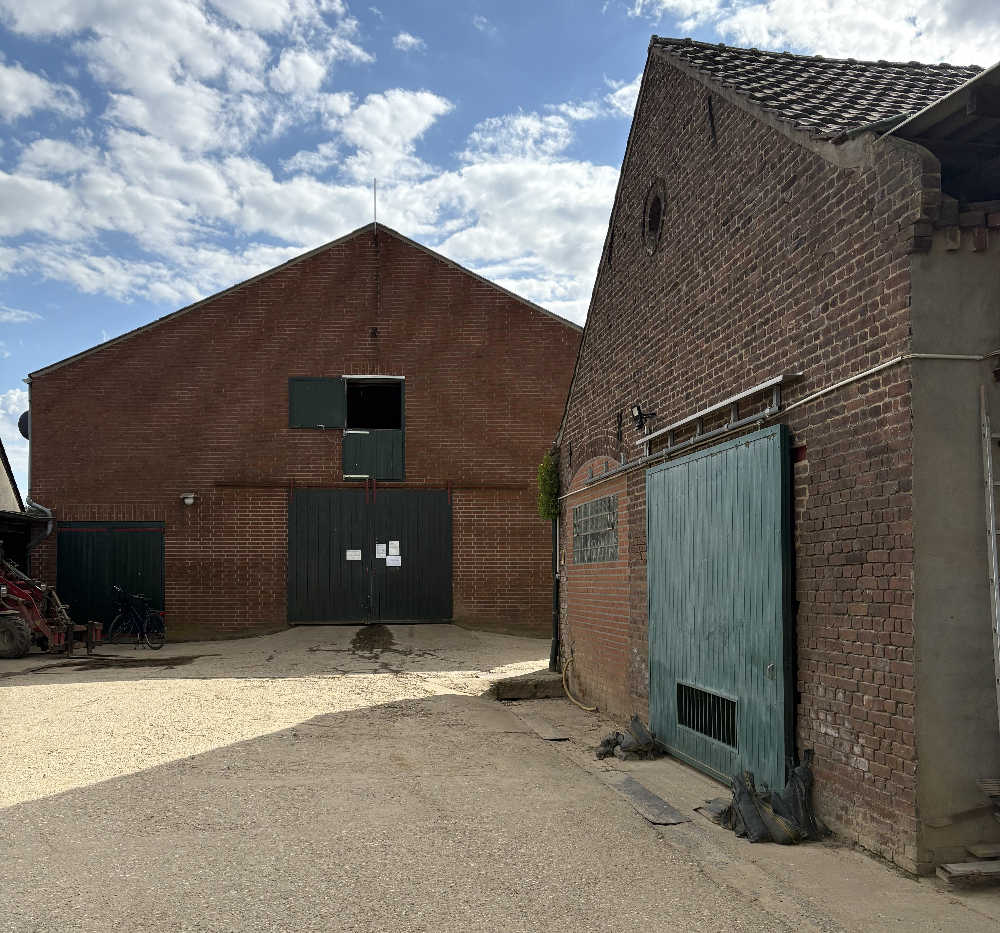

Unser Hof – seit Generationen mit Herz
Unser Biohof liegt ruhig gelegen zwischen Feldern und Bahngleisen im niederrheinischen Kerken – nicht weit von der holländischen Grenze. Seit 1994 bewirtschaften wir, Marlene und Ludwig Eickmannss, den Hof in zweiter Generation und haben ihn mit viel Eigenleistung und Überzeugung zu einem zertifizierten Bioland-Betrieb gemacht.
Marlene Eickmanns
Herz und Kopf unseres Hofs. Marlene kümmert sich um Organisation, Büroarbeit, Anbaubelange und ist für viele das Gesicht des Betriebs. Ihr ist es besonders wichtig, mit der Natur zu arbeiten – nicht gegen sie.

Ludwig Eickmanns
Techniktüftler, Feldarbeiter und Macher. Ludwig kennt jedes Werkzeug auf dem Hof und hat vieles davon selbst verbessert oder gebaut – vom Fräsgerät bis zur Waschanlage. Er sorgt dafür, dass der Porree pünktlich auf dem Feld, auf dem Band und im Laden landet.
Ronja
Unser Hofhund und gute Seele. Ronja ist freundlich zu allen – besonders zu Lieferanten, Helfern und neugierigen Besuchern. Man findet sie meist dort, wo gerade etwas los ist.
Unsere Region
Kerken liegt im Kreis Kleve, ganz nah an der niederländischen Grenze. Die fruchtbaren Böden und das milde Klima bieten beste Bedingungen für den Gemüseanbau – besonders für unseren Porree. Die ruhige Lage fernab von Großstadt und Verkehr erlaubt uns ein Arbeiten im Einklang mit Natur und Jahreszeiten.